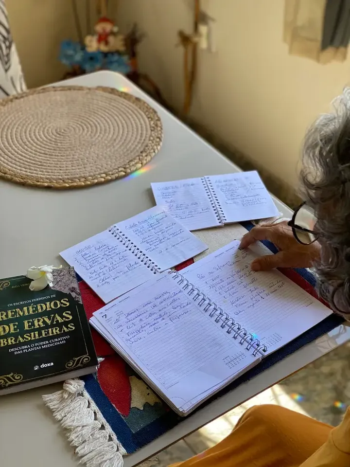

Um saber ancestral brasileiro que quase se perdeu.
E uma mulher determinada a registrar tudo antes que desapareça.
A autora Dalva Vieira cresceu observando sua família usar plantas para tratar:
- dor
- estômago
- gripe
- ansiedade
- inflamações
Mas foi apenas depois de viajar pela Índia e pelo Nepal, onde viu de perto como as famílias tratavam seus problemas de saúde usando ervas locais, que Dalva percebeu:


O Brasil tem algumas das plantas medicinais mais poderosas do mundo… e nós estamos deixando esse conhecimento morrer.
Durante anos, ela anotou:
- receitas
- ervas específicas para doenças
- doses
- combinações
- formas de preparo
- contraindicações
- relatos de famílias
- práticas de cura tradicionais
- orientações que funcionavam de verdade